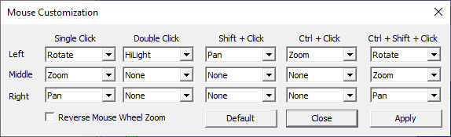
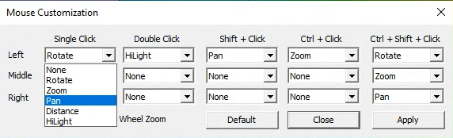
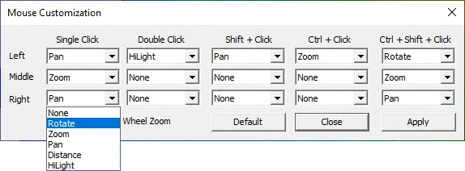
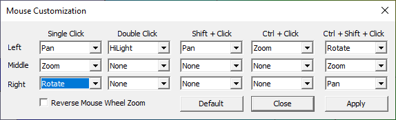

Mouse Mode
The Mouse Mode command allows users to customize mouse buttons for motion models. Following are the default buttons, assigned for important functions.
Left Mouse Click & Drag
|
Rotation |
Middle Mouse Click & Drag
|
Zoom in or out |
Right Mouse Click & Drag
|
Pan |
Left Mouse Double Click
|
Highlight a part |
Right Mouse Click
|
Drop down menu |
Mouse Customization Panel

Reverse Mouse Wheel Zoom - User can customize the zooming direction for forward as well as backward scroll.
How to customize mouse buttons with different interactive motion model functions?
Click Edit | MouseMode to open the Mouse Customization dialog box as shown below.
Click the drop down box provided for Left Single Click, it will display all possible functions.
Select Pan function.

Click the drop down list provided for Right Single Click, it will displays all possible functions.

Select Rotate. Now both the Rotation and Pan functions are interchanged for the mouse buttons.

Click Apply to enable these changes in viewer motion model.